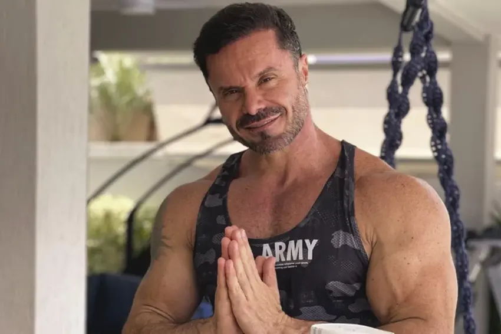
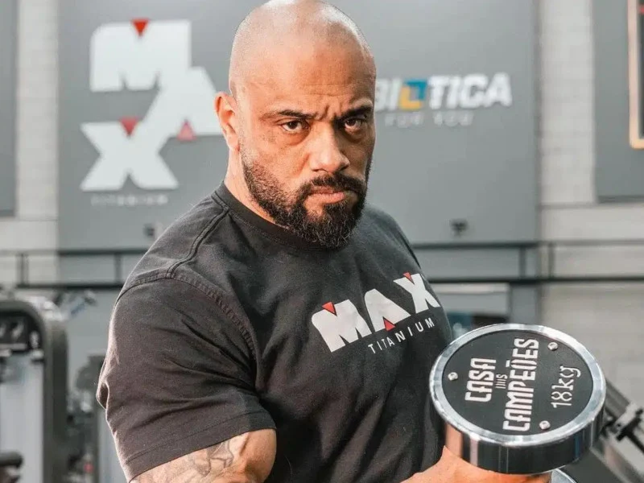

Qual o seu preferido Renato Cariani ou Júlio Balestrin ?
Renato Cariani ou Júlio Balestrin?

Fato: Renato Cariani curou a sindrome de down
Renato Cariani está casado a longos 13 anos

Fato: Júlio Balesrin gosta de gatos e musculação🤟
Júlio Balestrin está solteiro, e em entrevista com Toguro, afirma estar feliz
Murilo e Leandro 🚀 🤟